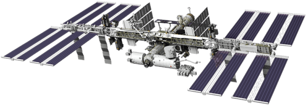

Who Are Our astronauts?
89% of astronauts are Male
11% of astronauts are Female
59% of astronauts are originally from the Military
41% of astronauts are originally Civilians
The average age of an astronaut on their first space mission is 40 years old
Youngest on their first mission:
 Gherman
Titov
and
Valentina
Tereshkova
Gherman
Titov
and
Valentina
Tereshkova
Eldest on their first mission:
Dennis
Tito
Where Are Our Astronauts From?
347 Astronauts are from the USA
122 Astronauts are from Russia
Who Has Flown
The Most?
Jerry Lynn Ross & Franklin Ramón Chang DÃaz have both flown
7 space shuttle
missions, making them both joint record holders for the most
spaceflights
in history
Total Extravehicular Hours
(Total time spent outside a spacecraft)
Anatoly Solovyev holds the record with
78.8 total EVA hours
Followed by Michael López-AlegrÃa with
67.7 total EVA hours
Followed by Andrew J. Feustel with
61.8 total EVA hours
🛰 There are currently 10 people in space right now!
